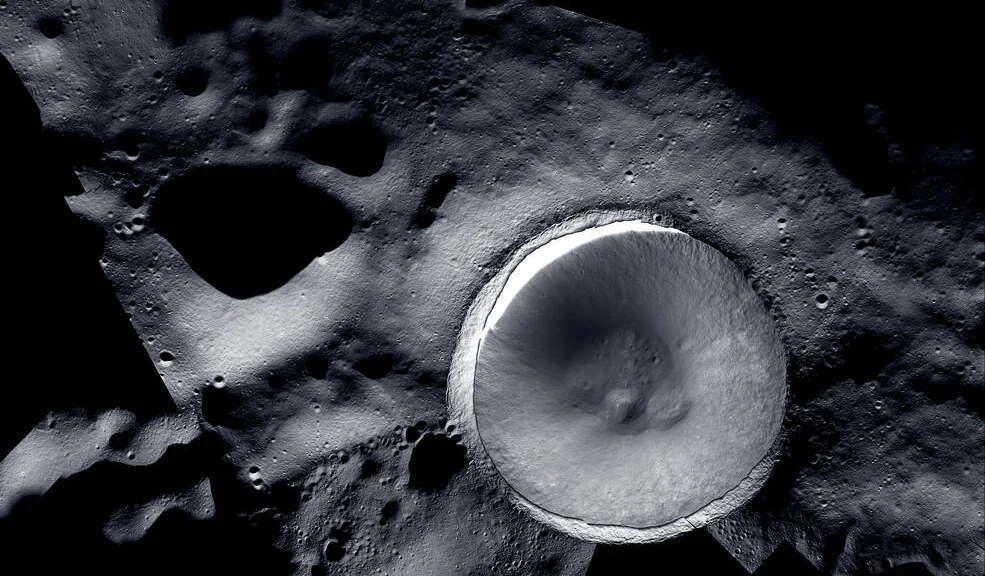

Saha parametreleri
- Gözlem sahası
- Başlangıç
- Örnek sayısı
- Arazi eşiği
- °
- Aydınlık süre
- sa
Ay’ın güney kutbu

| Başlangıç | Bitiş | Süre |
|---|
Bu sahayı sabitleyip B’nin ayarlarını değiştirin.
| Ölçüm | A | B | Fark (B − A) |
|---|
| Saha | Aydınlanma | Dünya görüş aralığı | Ortak süre | En uzun karanlık |
|---|
Döndürmek için sürükleyin veya yön tuşlarını kullanın.
Kürede LROC yüzey dokusu ve LOLA yükseklikleri kullanılır. Sabit ışık kraterleri belirginleştirir. İniş noktası analizi için daha ayrıntılı bölgesel arazi verisi gerekir.
NASA CGI Moon Kit ↗Lunar Surface Data Book · A2-2 ↗DE441 efemerisi · 18 Ekim–1 Kasım 2026 (bitiş hariç) · 1 saat aralık. Üç sahanın her biri için 336 çift Güneş–Dünya kaydı. Paket, altı orijinal sorgunun adresini ve kaynak tablo özetlerini içerir.
Ay atlasında kutup çevresini iki katmanla inceleyin. Daha geniş alanları ve diğer katmanları kaynak haritalarda keşfedebilirsiniz.
Ürün kimliği, piksel ölçeği ve ölçü birimi verinin nasıl yorumlanacağını belirler. Kutup katmanlarının ürün bağlantıları atlasın lejantında yer alır.
PDS arşivi ↗Kanada’nın Ay görevleri için bağlam; Dünya gözleminde radar, yöntem ve arşiv örnekleri. Bu kayıtlar Ay görünürlük hesabına girmez.
JPL modunda üç çalışma bölgesi için Horizons efemerisi kullanılır. Her örnek, gök cisminin merkezinin yerel teğet düzlemine göre konumudur. Demo modunda aynı alanlar sentetik bir modelden gelir.
Bir gök cismi, yüksekliği ayarlanan arazi açısını aştığı saatlerde görünür sayılır. Bu sabit eşik yerel sırtların ayrıntılı biçimini temsil etmez.
Güneş ile Dünya aynı saatte görünürse o saat ortak süreye eklenir. Art arda gelen saatler bir pencere oluşturur. Dünya görüşü bir radyo bağlantısını garanti etmez.
Panel enerjisi, panel gücü ile aydınlık saat sayısının ve 0,72 örnek sistem katsayısının çarpımıdır. En uzun karanlık, Güneş’in görünmediği en uzun kesintisiz süredir.